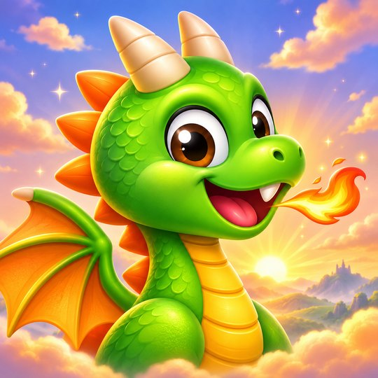

Le Petit Dragon
Ima suyakunkichu
- 7 suyukuna, 63 nivelkuna
- 7 bosskuna atipanaykipaq, sapankanpa yuyaynin
- Tukuy ayllupaq facil llamiy kamachiykuna

Usqhayllam iPhone-man, Android-man chayamunqa
Phawariy, phaway, nina tuqay.
Usqhayllam Android-man chayamunqaHuk sinchi uchuy q’umir dragón hina pukllay. Phawariy, p’itay, wayrapi phaway, nina tuqay Llanthukunaq Reyninta qarqunaykipaq.
7 suyukuna, 63 nivelkuna, 7 bosskuna, sapankanpa kikin yuyaynin. Kristalkunata huñuy, sapa nivelpi 3 quyllurkama tariy.
Le Petit Dragon usqhayllam App Store-man iPhone-paq, Android-manpas chayamunqa. Uraykachina botonqa lluqsiqtinmi kay p’anqaq hawanpi rikhurinqa.
Le Petit Dragon
Qillqamuwayku: contegamesstudio@gmail.com